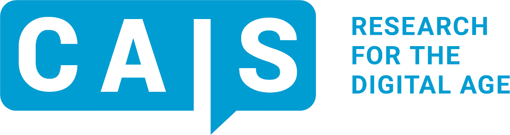
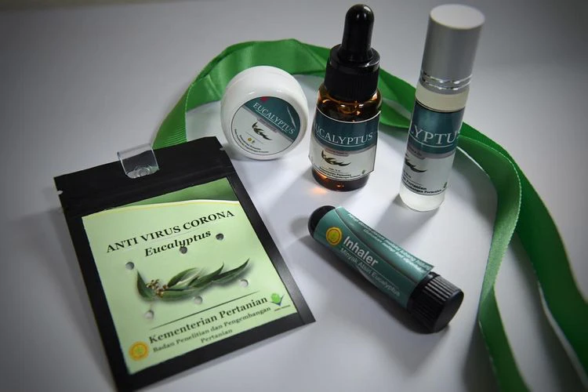
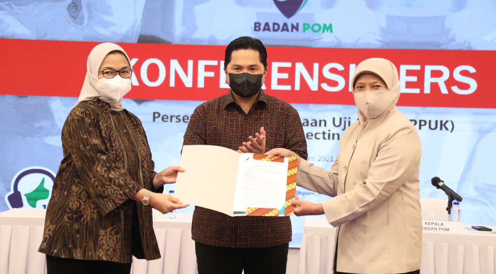
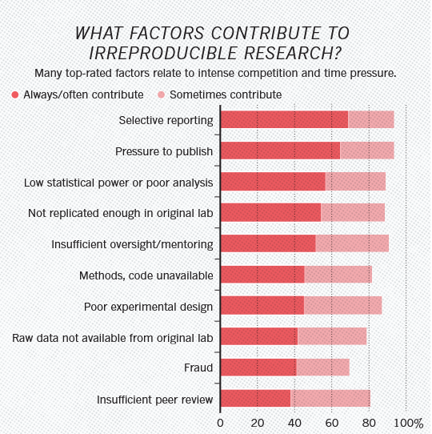
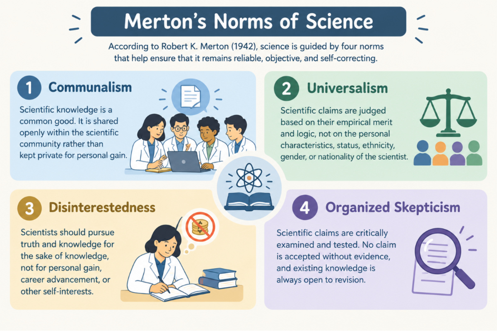
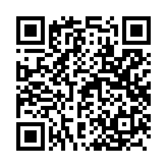

Research Data & Methods Team, Center for Advanced Internet Studies (CAIS)
Department of Psychology, Universitas Airlangga
Indonesian Science Affairs Fellowship 2026
Rizqy Amelia Zein
21 October 2026
An Introduction to Metascience and Open Science for Journalists
Weighing scientific claims and reporting on errors in science
AGENDA
- The Replication Crisis: Key Terms, Evidence, and Scope
- How Metascience Studies the Way Science Corrects Itself
- A Checklist for Quickly Weighing Scientific Claims
- Reporting on “Errors” in Science: Helping the Public Calibrate Its Trust
The “Anti-Corona” Necklace

Source: Universitas Gadjah Mada
Ivermectin

Discussion Question
Imagine you are a journalist assigned to cover these two stories. When these claims were circulating, what would you have checked before writing the story? Whom would you have called for confirmation?
Opening discussion, 5–10 minutes—Discussion notes are recorded in the working document
Two Cases of “Scientific Error” during the COVID-19 Pandemic
July 2020: the eucalyptus necklace
The claim from the Ministry of Agriculture’s research agency (Balitbang Kementan): the necklace kills the coronavirus, has been “laboratory tested,” and is ready for mass production with PT Eagle Indo Pharma (maker of Cap Lang). In fact, the lab test used a different coronavirus model, not SARS-CoV-2. The packaging read “Anti Virus Corona,” but its BPOM registration was only as a jamu (traditional herbal medicine).
2021: ivermectin
Promoted by officials and manufacturers as a COVID-19 treatment; the Minister of State-Owned Enterprises even said it had already been approved for distribution as a COVID-19 drug. BPOM denied this: ivermectin was approved only for parasitic worm infections, and for COVID-19 it was still limited to clinical trials. The manufacturer of Ivermax12 later apologized for its overstated claims, and production was temporarily halted.
In both cases, the clarification came only after the claims had spread widely.
01
The Replication Crisis: Terms, Evidence, and Scope
Let’s Start with a Thought Experiment
You read an interesting finding in a top journal and imagine turning this scientific article into a news story.
- Question 1: If another research team tried the same study again, collecting new data, would they find the same result?
- Question 2: If another research team reanalyzed the original data with the original analysis script/files from that study, would they get exactly the same results as those reported in the article?
- Intuitively, many journalists assume the answer to both is “yes, of course! This paper was published in a top Q1 journal!” (Bottesini et al., 2023)
- Over the past 15 years, researchers have actually checked, and the answer… has disappointed a lot of people.
Three Terms That Often Get Mixed Up
Based on Barba (2018) and The Turing Way, most people tend to confuse these terms:
Reproducibility (🇮🇩 “reka ulang”)
Same data + same analysis → same results. Other researchers (or the same research team) rerun the same analysis on the same data and get exactly the same results as reported in the article. Same recipe and same ingredients, cooked again.
Replicability (🇮🇩 “coba ulang”)
New data + same method → similar results. An independent research team repeats the study with new participants and reaches conclusions comparable to the original study. Same recipe, cooked with new ingredients.
Robustness (🇮🇩 “keandalan”)
Same data + new analysis → same results, or at least similar conclusions. The findings stay stable even when different analytic strategies are used. The recipe is made with the same ingredients, but with a different cooking technique.
Psychology as Ground Zero, 2011
- 2011—Daryl Bem’s article on extrasensory perception: a prestigious journal (Journal of Personality and Social Psychology, JPSP) published evidence that people can sense what will happen in the future (Bem, 2011), using experimental methods and testing the hypotheses with standard statistical tests, which sparked controversy. If a simple experiment could “prove” the impossible, what is the point of doing research at all?
- 2011—The Diederik Stapel academic fraud case: a once-respected social psychology professor was found to have fabricated data in dozens of published papers.
- 2011—“False-Positive Psychology” (Simmons et al., 2011): showed that analytic choices that seem trivial and routine, but go undisclosed, can make anything statistically significant. In this paper, they showed how easy it is to “prove” that listening to the song “When I’m Sixty-Four” makes people literally younger (by almost 1.5 years, according to their birth dates), an impossible claim.
- These events raised a big question in the psychology community: how many scientific claims in the psychology literature can actually be trusted?
At the time, the psychology community responded most actively (on social media) to the replication crisis, but it was not the only discipline with this problem.
Replication Results
How many scientific claims were confirmed when the studies were repeated with new data?
36%
of 100 psychology studies (Open Science Collaboration, 2015)
46%
of 112 scientific claims (from 50 experiments published in 23 articles) in preclinical cancer biology (Errington et al., 2021). The team originally planned to replicate 193 experiments from 53 high-impact-factor articles (2010–2012), but only 50 experiments from 23 articles could be carried out.
61%
of 18 laboratory experiments in economics (Camerer et al., 2016)
49%
of 164 randomly selected articles (containing 274 claims) replicated with new data across 6 disciplines in the social and behavioral sciences, through the SCORE project. The median effect size in these replications dropped from r = 0.25 to 0.10 (Tyner et al., 2026)
- Even when findings were successfully replicated, the average effect size was only about half of what was originally reported (known as “The Decline Effect”)—the SCORE project found the same pattern again in 2026.
- Because this pattern shows up in large-scale research, what the media calls the “replication crisis” does appear to be real.
What Do Researchers Say?
Nature surveyed 1,576 researchers across disciplines (Baker, 2016).
>70%
of researchers in chemistry and biology had failed to replicate another researcher’s experiment
>50%
of researchers in chemistry, biology, physics, engineering, and medicine had failed to replicate their own experiments
~90%
think there is a replication crisis: 52% said it is a “significant crisis,” and 38% a “slight crisis”
Most of the scientists who took part in this survey acknowledge that the replication crisis is real.
Even Reproducing Results Is Hard
Set aside replication, which requires new data. Can scientific claims be reproduced from the original data and materials?
22/67
economics articles published in 13 leading journals could be reproduced without contacting the authors (Chang & Li, 2015)
11/35
articles published in Cognition, which requires open data, could be reproduced without help from the original authors (Hardwicke et al., 2018)
1/14
articles with an open data badge in Psychological Science could be reproduced exactly (Crüwell et al., 2023)
54%
of 143 scientific claims in the social and behavioral sciences could be reproduced exactly from the original data and research materials (Miske et al., 2026)
A “Seemingly Small” Error with Big Consequences
- Reinhart and Rogoff published “Growth in a Time of Debt” in 2010.
- Their conclusion: countries with public debt above 90% of GDP grew much more slowly, at an average of −0.1% per year. This conclusion was later cited to justify austerity policies in many countries after the 2008 crisis, especially in the European Union.
- There was an error in their Excel file, discovered only when a graduate student obtained the original spreadsheet (Herndon et al., 2014).
- There were three problems: some countries and years of data were selectively excluded; the way countries were weighted was fairly subjective; and a formula error in Excel left some countries out of the average.
- After correction, average growth for countries with debt above 90% of GDP was about 2.2%, not −0.1%.
This is not an isolated case—about half of psychology articles are known to contain at least one inconsistently reported statistical result (Nuijten et al., 2016).
Why Did This Crisis Happen?
Usually not simply because of bad intent or fraud, but because of a natural human response to the way the incentive system works.
- Publication bias: journals tend to publish only novel findings that match theoretical predictions, so null/negative results tend to be rejected.
- Publish or perish: academic careers depend on, and are measured by, the number of publications.
- Questionable research practices (QRPs): practices in the gray area between justified/valid methodological decisions and data fabrication. These include p-hacking, HARKing, and selective reporting (John et al., 2012).
- Peer review is not necessarily a guarantee of quality.
- Reviewers read the manuscript and rarely rerun the analysis.
- Unpaid, done in between other work, usually by two or three people.
- Can catch errors that are obvious in the manuscript, but is not designed to catch errors buried in the research cycle.
- Even without bad intent, a single dataset lets researchers take many different sequences of analytic decisions that are all methodologically reasonable (Gelman & Loken, 2014).
Why Did This Crisis Happen?
What did the 1,576 researchers surveyed by Nature say (Baker, 2016)?

Discussion Question
Now that you know how much uncertainty, how many problems, and how many errors are built into the way science and scientists work, does science still deserve to be trusted?
Second discussion, 5–10 minutes—Discussion notes are recorded in the working document
02
How Science Corrects Itself
What Is Metascience?
Research on research: using the scientific method to check whether science works the way it should.
- How often do scientific claims hold up when other researchers test them again?
- Which practices make scientific claims prone to mistakes/errors?
- How can the biases scientists carry be uncovered, and how can they be addressed?
- How do social processes shape the way science works (e.g., peer review; allocation of resources such as research grants; recruitment, education, and training systems; and the management of research resources)?
Why Does Metascience Matter?

Source: Merton (1942). Illustration generated with GPT-6.
Why Does Metascience Matter?

Source: Merton (1942). Illustration generated with GPT-6.
Why Does Metascience Matter?

Source: Merton (1942). Illustration generated with GPT-6.
What Makes a Recipe Possible to Recreate?

Source: Devina Hermawan Official Website
Open Science Practices through a Cooking Analogy
When you look up a recipe online, what makes you confident you can recreate the dish?
Preregistration
The recipe is written down and time-stamped before cooking: hypotheses, design, analysis plan (Nosek et al., 2018).
Open data and code
The ingredients and their quantities are described in detail and transparently—no “secret recipe”—so others can verify the scientific claims presented in the article.
Registered Reports (Chambers, 2013)
Reviewers assess the recipe before it is cooked. The editor commits to publishing the article whatever the results turn out to be. More than 300 journals across disciplines have adopted this publishing model.
Do Open Science Practices Have Any Impact?
Registered Reports
Impact: only 44% of RRs report hypotheses supported by the data, compared with 96% of standard articles (Scheel et al., 2021). Reviewers judge RRs to be more methodologically rigorous and, overall, to produce higher-quality articles than standard articles (Soderberg et al., 2021).
However: there are still few of them, and not every research design suits this format.
Preregistration
Impact: preregistered studies more often report statistical power analyses (i.e., the probability of detecting an effect, if that effect truly exists in the population) and have larger sample sizes than non-preregistered studies (van den Akker et al., 2024).
However: the proportion of positive results and the effect sizes do not differ from standard studies. Of 27 studies in Psychological Science, 25 deviated from their preregistration and only one disclosed all of its deviations (Claesen et al., 2021).
Open data and code mandates
Impact: 1️⃣ After Cognition made open data mandatory, the share of articles with a data availability statement rose from 25% to 78% (Hardwicke et al., 2018). 2️⃣ At The BMJ and PLOS Medicine, which require authors to share their data openly, data were available for 17 of 37 eligible clinical trials (published 2013–2016), but only 14 of these could be fully reproduced (Naudet et al., 2018). 3️⃣ Of 204 randomly selected articles published in Science, which has required open data since 2011, data were actually available for only 44%, and only 26% could be reproduced (Stodden et al., 2018).
However: shared data and materials cannot necessarily be verified and reproduced.
All three change scientists’ behavior, but only to the extent that someone else gets involved and does the verifying.
Limits of Open Science Practices
- Open science practices make errors visible, so they can be detected by other scientists.
- But these practices are not designed to prevent errors committed with bad intent (i.e., academic misconduct, such as data fabrication).
- Open science practices aim to change scientists’ behavior at the individual level.
- Yet systemic causes (e.g., incentives, human resource management, and the scientific publishing system) also contribute substantially.
- These practices push scientists to be more transparent, but transparency only means something if verification also takes place.
- Ideally, incentives for innovation and for correction would be equal, but in reality, scientists have far less incentive to correct errors than to produce innovations.
- Efforts to address this have begun (e.g., the CTRL-Z Award), but they are not yet mainstream.
Case Study: Anomalies in the Data vs. in Article Metadata
The Dan Ariely case: anomalies in the data
The case: Study 2 in Ariely and Wertenbroch (2002), Psychological Science, on deadlines and procrastination. The data are suspected of having been fabricated.
How it was uncovered: Data Colada compared the original dataset file with data from a failed replication. They found an effect size of d = 2.5; 18 of 20 participants in one condition had identical scores (suggesting the data were fabricated by duplicating scores); and time-duration data that were (oddly) too precise, almost never rounded.
Outcome of the investigation: both authors have asked for the paper to be retracted (withdrawn from publication); the editor is still processing the request.
Jaring.id: anomalies in the authorship trail (i.e., scientific article metadata)
The case: fictitious co-authors, foreign researchers’ names used without permission, and authorship slots sold by paper mills at a number of Indonesian universities (Jaring.id et al., 2024). The pattern is systematic, tied to “shortcuts” for getting around academic promotion requirements.
How it was uncovered: investigative journalists traced the Retraction Watch Database, PubPeer, Scopus, PDDikti (Indonesia’s national higher education database), article-trading groups on social media, and conducted interviews.
Outcome of the investigation: ethics sanctions for scientists whose articles were problematic; a new collaboration policy at Universitas Multimedia Nusantara; several journals retracted the problematic articles.
The first case came to light because the data were available to be rechecked, while the second came to light because the articles’ metadata trail could be traced online.
Discussion Question
Having read the details of the Dan Ariely case and the Jaring.id investigation, why did it take so much longer to uncover Dan Ariely’s (alleged) academic misconduct than that of the Indonesian scientists exposed by Jaring.id?
Third discussion, 5–10 minutes—Discussion notes are recorded in the working document
03
A Checklist for Weighing Scientific Claims
What Strategies Do Science Journalists Use?
Bottesini et al. (2023) studied 181 science journalists in an experiment with preregistered hypotheses.
- Participants rated eight summaries of fictional psychology studies.
- Four factors were randomized: sample size, sample representativeness, p value, and the prestige of the researchers’ university.
- Measured: participants’ perception of how trustworthy the study’s results were, and how newsworthy they were.
Of these four randomized factors, which one do you think contributed most to explaining the journalists’ judgments?
The Results
Sample size was the strongest predictor of how trustworthy journalists perceived a scientific claim to be.

Source: Bottesini et al. (2023)
- In the open-ended questions, many participants mentioned one verification practice they always follow: interviewing other experts who were not involved in the study.
- Other factors mentioned as relevant to journalists’ judgments: journal prestige, experimental vs. correlational design, peer review status, funding source, and whether the claims match the evidence.
Checklist: Four Questions
Can be applied quickly to a scientific article or a press release that contains a scientific claim.
1. What is the article’s status?
Is the scientific article a preprint, already peer-reviewed, or only a press release (see the difference here)? Do the claims in the press release match the claims in the paper?
2. Is the research well enough executed to support the claim?
Is the design experimental or correlational? Is the sample size proportionate to the size of the claim? Are the data and research materials openly accessible?
3. Are there obvious signs of error?
Check for anomalies in the numbers, images, and authorship patterns (more detail on the next slide).
4. Has anyone verified it?
Contact an independent expert who was not involved in the study (a must) for an initial check. Who funded the study? Has the study ever been replicated?
Two Routes to Detecting Errors
The first route requires basic statistical skills, but the second only takes careful attention.
The statistical route
✅ Are the reported p values very close to 0.05?
✅ Is the reported effect size plausible, or too large compared with similar studies in the field (Ariely’s Study 2: d = 2.5, far too large for a typical psychology study)?
✅ Are there duplicated/identical or suspiciously tidy data in the data table (Ariely’s Study 2: 18 of 20 participants had identical/duplicated data)?
The metadata route
✅ Is there anything odd about the text and images in the article? For example, duplicated images, tortured phrases, undeclared AI use, fictitious references
✅ Does the research team’s collaboration pattern make sense? If something seems off, this is usually a hallmark of paper-mill articles.
✅ Do the authors or the journal have a history of retractions in open databases?
✅ If there is a history of retractions, what were the causes/reasons for them?
Tools You Can Use
- Retraction Watch Database: to check the retraction history of authors or journals.
- PubPeer: for post-publication peer review by other researchers, often used to report errors in published articles.
- statcheck: to check the consistency of reported statistical results.
- ImageTwin: to check for image duplication and manipulation in research articles.
- Citely: a platform for checking the authenticity of cited references.
Journal Prestige Is No Guarantee
Journalists in the Bottesini et al. (2023) study did not see university prestige as a factor in their judgments, but some mentioned that the prestige of the journal publishing the article could be relied on.
- The higher a journal’s impact factor, the more often its articles are retracted (Fang & Casadevall, 2011).
- Of 21 social science experiments published in Nature and Science, only 13 were successfully replicated, with an average effect size about half the original (Camerer et al., 2018).
- And yet Nature and Science are the two most prestigious journals among scientists.
- The impact factor and journal quartile (Q1–Q4) measure how often articles in the journal are cited on average, not the quality of the articles it publishes.
- Citations are also usually propped up by a small number of very highly cited articles (Seglen, 1997).
- Dan Ariely’s article was published in Psychological Science, considered highly prestigious among psychologists; some of the paper-mill articles exposed by Jaring.id were published in Scopus-indexed journals, considered prestigious among Indonesian scientists.
- For this reason, some scientists argue that using journal prestige as an indicator of research quality is a form of bad scientific practice (Brembs et al., 2013).
04
Reporting on “Errors” in Science: Helping the Public Calibrate Its Trust
Why Science Journalists (and Communicators) Matter
Schapals et al. (2026) map the various actors who “watch over” science as watchdogs, from investigative science journalists to scientific sleuths on PubPeer. They fill many important roles that scientists cannot.
- Drawing public attention and speeding up the correction of the scientific literature.
- Brian Deer’s investigation in the Sunday Times in 2009 contributed to The Lancet’s retraction of Andrew Wakefield’s article (which claimed a link between the MMR vaccine and autism) in 2010.
- Dyna Rochmyaningsih’s investigation, published in Science in 2018, into the ethical problems of research conducted with the Bajau people, sparked discussion about administrative procedural certainty and epistemic justice in research carried out by foreign researchers involving Indigenous communities. Law No. 11/2019 on the National System of Science and Technology (Sisnas Iptek) was passed a year later.
- Catherine Offord’s reporting (The Scientist) and an investigation by The Guardian exposed the Surgisphere data scandal. The Lancet article that used these data reported that hydroxychloroquine was associated with an increased risk of death among COVID-19 patients, and briefly led the WHO to pause its clinical trial. The article was retracted by The Lancet on June 4, 2020.
Other Roles of Science Journalists (and Communicators)
Schapals et al. (2026) map the various actors who “watch over” science as watchdogs, from investigative science journalists to scientific sleuths on PubPeer. They fill many important roles that scientists cannot.
- Translating the implications of technical errors for the public: platforms such as PubPeer, statcheck, and ImageTwin detect and document problems and errors, but they are understood only within a limited circle of scientists.
- Science journalists have legal protection and social infrastructure that individual scientific sleuths or whistleblowers lack.
- Separating evidence-based criticism from anti-science actors who also claim to be “exposing” scientists’ lies.
- Filling gaps in countries with weak research integrity infrastructure: Plagio SOS in Latin America, India Research Watch, Selisik Integritas Akademik (a collaboration of Jaring.id, Tempo, and The Conversation Indonesia) and ScienceWatchdog in Indonesia.
Risks to Mitigate
The goal of reporting: readers trust scientific claims in proportion to the strength of the evidence.
- Risk 1️⃣: Overtrust
- Weak scientific claims reported sensationally, like the eucalyptus necklace and ivermectin.
- Risk 2️⃣: Spreading distrust
- Readers’ perceptions leap from “one case of error/misconduct” to “none of science can be trusted.”
Exposing errors/misconduct in science is essential, given that public funding, policies, and clinical decisions, which can have far-reaching effects on society, are generally justified by scientific claims. But the question is: how can both of the risks above be minimized?
Is It Newsworthy?
Not every case of error/misconduct/retraction deserves a story. Pawar (2022) summarizes four questions journalists commonly ask to determine news value.
- ✅ Does the case have wider implications? These include implications for research in the field, clinical or medical applications, or policy implications
- ✅ Does the case reveal something about how science works?
- ✅ Are the people involved in the case highly influential, or do they hold positions of authority?
- ✅ Is the case unusual or egregious enough that it has to be reported?
Aim Criticism at the Right Target
The party in the wrong is always a specific one: a researcher, an institution, a journal, or a policy. Not “science in general.”
Avoid
- “Research shows…”
- “Scientists turn out to be wrong”
- “Our academic world is rotten”
Consider
- “Ariely and Wertenbroch’s (2002) study in Psychological Science shows…”
- “Study 2’s data are suspected of being fabricated; the journal is processing its retraction”
- “Scopus publication requirements for academic promotion are driving the trade in authorship slots”
Naming the specific parties, such as researchers, institutions, journals, and policies, makes it clear where the error lies and who should be held accountable.
Reporting Errors Can Be Framed as a Self-Correction Mechanism
- An article retraction indicates that there was a verification process, that a problem was identified, and that this self-correcting system responded.
- But the system’s response is indeed often slow: Andrew Wakefield’s article was published in 1998, but was not fully retracted by The Lancet until 2010.
- Few retractions in a field is not necessarily good news: the errors may still be there, but no one is checking for them and finding them.
- Should the independent experts/parties who found/verified the error be named in the story?
- Name the checkers/verifiers only with their consent, since some prefer to work anonymously because their job position/status tends to be precarious.
Use Precise Language
These five types of cases need to be distinguished and described explicitly, so that the story stays proportionate.
- Data fabrication/falsification: data deliberately invented or manipulated with bad intent, but such cases are relatively rare.
- Publication misconduct: buying and selling authorship slots, paper mills, fictitious authors, plagiarism, duplicate publication by authors; in Indonesia, these cases are fairly common, and are usually driven by the motivation to take shortcuts to obtain incentives.
- Questionable research practices (QRPs): methodological shortcuts in a gray area, possibly without bad intent.
- Honest error: typos, procedural mistakes, miscalculations; can happen even to very careful researchers.
- Retraction without any indication of academic misconduct: an article published twice because of a publisher’s mistake, problems with the article’s metadata.
When in doubt, ask the journal’s editorial office: what is the official reason for the retraction, and who requested it?
Always Report the Denominator
“More than 10,000 scientific articles were retracted in 2023, the highest on record” sounds alarming. But out of how many published articles, and where did they come from?
0.2%
of articles published in 2022 were eventually retracted, or about 1 in 500
8,000+
of those 10,000 retractions came from a single publisher (Hindawi), most of them from special issues
Source: Van Noorden (2023), Nature, 624, 479–481.
Before Publication
Practices summarized by Pawar (2022) from the experience of journalists Charles Piller and Richard Van Noorden:
- Send all your findings to the party under investigation in a single email, e.g., as a no-surprise email.
- Give them enough time to respond.
- Make clear that not responding will not stop publication.
- Always verify sources’ claims independently, including sources whose identity you are protecting.
Round It Out with Accountability
A story that stops at describing the scandal risks breeding public cynicism. Reduce this risk by rounding out the story with information about what has changed, or what should be done but has not been done yet.
Avoid
- Stopping at “the article is suspected to be a paper-mill product”
- “This case tarnishes the reputation of Indonesian researchers”
Consider
- “The university imposed ethics sanctions and introduced new rules for international collaboration”
- “Frontiers retracted four articles by two authors highlighted in this report”
- “The editors of Psychological Science are still processing the retraction”
The question “so what did the institution do?” is often the most important part of the story. Try to chase down this information and include it as a key part of the story. But even if no action has been taken at all, that is still worth reporting, so that there is public pressure for, and support of, the changes/actions that need to happen.
Three Toolkits to Take Away
A quick check of newsworthiness and claim quality
Use the checklist before deciding to cover a research finding.
Trust, but verify (Van Noorden, in Pawar, 2022)
Always cross-check by interviewing independent experts for every story.
Name the verifiers
Always name who found the problem (if they agree to be named), so readers know where the correction came from.
Conclusion
Science is not free of errors. What makes it trustworthy is that there are procedures and systems to check and correct them.
- The replication crisis is real. Many findings, including those published in top journals, do not hold up when replicated. Some cannot even be reproduced from the original data.
- Open science helps, but it has limits. Preregistration, Registered Reports, and open data change researchers’ behavior to the extent that someone checks. But none of them stops academic misconduct committed with bad intent.
- Prestige is not a measure of quality. Check the article’s publication status, its design and sample size, and any signs of error, and ask independent experts for their opinion.
- Report errors proportionately. Aim criticism at the right target, use the right terms, include the denominator, and close with what action was taken or what policy changed.
Please Help by Filling Out the Evaluation Survey
Please take ~5 minutes to evaluate the material presented today. The survey is anonymous; no personal information is requested. Thank you very much for your help!😊
Click here or scan the QR code below.

References
This reference page can be scrolled down.
Scientific articles and research reports
- Baker, M. (2016). 1,500 scientists lift the lid on reproducibility. Nature, 533(7604), 452–454.
- Barba, L. A. (2018). Terminologies for reproducible research. arXiv, 1802.03311.
- Bem, D. J. (2011). Feeling the future: Experimental evidence for anomalous retroactive influences on cognition and affect. Journal of Personality and Social Psychology, 100(3), 407–425.
- Bottesini, J. G., Aschwanden, C., Rhemtulla, M., & Vazire, S. (2023). How do science journalists evaluate psychology research? Advances in Methods and Practices in Psychological Science, 6(3), 25152459231183912.
- Brembs, B., Button, K., & Munafò, M. (2013). Deep impact: Unintended consequences of journal rank. Frontiers in Human Neuroscience, 7, 291.
- Camerer, C. F., et al. (2016). Evaluating replicability of laboratory experiments in economics. Science, 351(6280), 1433–1436.
- Camerer, C. F., et al. (2018). Evaluating the replicability of social science experiments in Nature and Science between 2010 and 2015. Nature Human Behaviour, 2(9), 637–644.
- Chambers, C. D. (2013). Registered Reports: A new publishing initiative at Cortex. Cortex, 49(3), 609–610.
- Chang, A. C., & Li, P. (2015). Is economics research replicable? Sixty published papers from thirteen journals say “usually not”. Finance and Economics Discussion Series, 2015-083. Federal Reserve Board.
- Claesen, A., Gomes, S., Tuerlinckx, F., & Vanpaemel, W. (2021). Comparing dream to reality: An assessment of adherence of the first generation of preregistered studies. Royal Society Open Science, 8(10), 211037.
- Crüwell, S., et al. (2023). What’s in a badge? A computational reproducibility investigation of the open data badge policy in one issue of Psychological Science. Psychological Science, 34(4), 512–522.
- Errington, T. M., et al. (2021). Investigating the replicability of preclinical cancer biology. eLife, 10, e71601.
- Fanelli, D. (2013). Why growing retractions are (mostly) a good sign. PLoS Medicine, 10(12), e1001563.
- Fang, F. C., & Casadevall, A. (2011). Retracted science and the retraction index. Infection and Immunity, 79(10), 3855–3859.
- Fang, F. C., Steen, R. G., & Casadevall, A. (2012). Misconduct accounts for the majority of retracted scientific publications. PNAS, 109(42), 17028–17033.
- Gelman, A., & Loken, E. (2014). The garden of forking paths [Unpublished manuscript]. Columbia University.
- Hardwicke, T. E., et al. (2018). Data availability, reusability, and analytic reproducibility: Evaluating the impact of a mandatory open data policy at the journal Cognition. Royal Society Open Science, 5(8), 180448.
- Herndon, T., Ash, M., & Pollin, R. (2014). Does high public debt consistently stifle economic growth? A critique of Reinhart and Rogoff. Cambridge Journal of Economics, 38(2), 257–279.
- John, L. K., Loewenstein, G., & Prelec, D. (2012). Measuring the prevalence of questionable research practices with incentives for truth telling. Psychological Science, 23(5), 524–532.
- Merton, R. K. (1973). The normative structure of science. In N. W. Storer (Ed.), The sociology of science: Theoretical and empirical investigations (pp. 267–278). University of Chicago Press. (Original work published 1942)
- Miske, O., et al. (2026). Investigating the reproducibility of the social and behavioural sciences. Nature, 652(8108), 126–134.
- Naudet, F., et al. (2018). Data sharing and reanalysis of randomized controlled trials in leading biomedical journals with a full data sharing policy: Survey of studies published in The BMJ and PLOS Medicine. BMJ, 360, k400.
- Nielsen, M., & Qiu, K. (2022). A vision of metascience: An engine of improvement for the social processes of science. Science++.
- Nosek, B. A., Ebersole, C. R., DeHaven, A. C., & Mellor, D. T. (2018). The preregistration revolution. PNAS, 115(11), 2600–2606.
- Nuijten, M. B., Hartgerink, C. H. J., van Assen, M. A. L. M., Epskamp, S., & Wicherts, J. M. (2016). The prevalence of statistical reporting errors in psychology (1985–2013). Behavior Research Methods, 48(4), 1205–1226.
- Open Science Collaboration. (2015). Estimating the reproducibility of psychological science. Science, 349(6251), aac4716.
- Pietschnig, J., Siegel, M., Eder, J. S. N., & Gittler, G. (2019). Effect declines are systematic, strong, and ubiquitous: A meta-meta-analysis of the decline effect in intelligence research. Frontiers in Psychology, 10, 2874.
- Reinhart, C. M., & Rogoff, K. S. (2010). Growth in a time of debt (NBER Working Paper No. 15639). National Bureau of Economic Research.
- Schapals, A. K., Riedlinger, M., Montaña-Niño, S., & Rednikin, A. (2026). Shining light on “dark science”: Mapping the field of science watchdog journalism. Media and Communication, 14, 12392.
- Scheel, A. M., Schijen, M. R. M. J., & Lakens, D. (2021). An excess of positive results: Comparing the standard psychology literature with Registered Reports. Advances in Methods and Practices in Psychological Science, 4(2), 25152459211007467.
- Seglen, P. O. (1997). Why the impact factor of journals should not be used for evaluating research. BMJ, 314(7079), 497.
- Serghiou, S., Marton, R. M., & Ioannidis, J. P. A. (2021). Media and social media attention to retracted articles according to Altmetric. PLOS ONE, 16(5), e0248625.
- Simmons, J. P., Nelson, L. D., & Simonsohn, U. (2011). False-positive psychology: Undisclosed flexibility in data collection and analysis allows presenting anything as significant. Psychological Science, 22(11), 1359–1366.
- Soderberg, C. K., et al. (2021). Initial evidence of research quality of registered reports compared with the standard publishing model. Nature Human Behaviour, 5(8), 990–997.
- Stodden, V., Seiler, J., & Ma, Z. (2018). An empirical analysis of journal policy effectiveness for computational reproducibility. PNAS, 115(11), 2584–2589.
- Tyner, A. H., et al. (2026). Investigating the replicability of the social and behavioural sciences. Nature, 652(8108), 143–150.
- van den Akker, O. R., et al. (2024). Preregistration in practice: A comparison of preregistered and non-preregistered studies in psychology. Behavior Research Methods, 56(6), 5424–5433.
- Vazire, S., & Holcombe, A. O. (2022). Where are the self-correcting mechanisms in science? Review of General Psychology, 26(2), 212–223.
Investigations, news, and online sources
- Bhattacharjee, Y. (2013, April 26). The mind of a con man. The New York Times Magazine.
- Center for Open Science. (2026). Large-scale collaboration releases new findings on research credibility [SCORE press release].
- The Center for Scientific Integrity. (2026, August 4). 2026 winners of the CTRL-Z Award for courage in retracting one’s own work.
- Data Colada. (2026, August 31). [138] Artificial deadlines (part 1): Evidence of fraud in an influential study about procrastination.
- Davey, M., Kirchgaessner, S., & Boseley, S. (2020, June 3). Surgisphere: Governments and WHO changed Covid-19 policy based on suspect data from tiny US company. The Guardian.
- Else, H. (2021). ‘Tortured phrases’ give away fabricated research papers. Nature, 596(7872), 328–329.
- Jones, N. (2026). Half of social-science studies fail replication test in years-long project. Nature.
- Mehra, M. R., Ruschitzka, F., & Patel, A. N. (2020). Retraction—Hydroxychloroquine or chloroquine with or without a macrolide for treatment of COVID-19: A multinational registry analysis. The Lancet, 395(10240), 1820.
- Pawar, P. (2022, May 31). Reporting on retractions. The Open Notebook.
- Pickett, M. (2018, December 11). How to conduct difficult interviews. The Open Notebook.
- Rochmyaningsih, D. (2018, July 27). Did a study of Indonesian people who spend most of their days under water violate ethical rules? Science.
- ScienceWatchdog.id. (2025, October 18). The rise of scientific sleuths: Ensuring research integrity.
- Somad, A., et al. (2024, April 22). Main catut nama sampai daur ulang artikel ilmiah [From misused names to recycled scientific articles]. Jaring.id, in collaboration with Tempo and The Conversation Indonesia.
- Van Noorden, R. (2023). More than 10,000 research papers were retracted in 2023 — a new record. Nature, 624(7992), 479–481.
- Zein, R. A. (2018, November 16). Efek kobra, dosen Indonesia terobsesi pada indeks Scopus dan praktik tercela menuju universitas kelas dunia [The cobra effect: Indonesian lecturers’ obsession with Scopus indexing and disgraceful practices on the road to world-class universities]. The Conversation Indonesia.
- Zein, R. A. (2024, May 15). Mengenal cara kerja ‘paper mill’: Pabrik artikel ilmiah yang beroperasi seperti kartel di film-film [How ‘paper mills’ work: Scientific article factories that operate like cartels in the movies]. The Conversation Indonesia.
- Wakefield and Surgisphere cases: Brian Deer interview in The Times (archived); Catherine Offord’s coverage in The Scientist; ABC News timeline on hydroxychloroquine
- Reinhart and Rogoff case: The Conversation (2013); Business Insider (2018)
- Eucalyptus necklace case: UGM; Bisnis.com (2020); iNews
- Ivermectin case: BPOM; CNN Indonesia (2021); Antara Jabar; Kabar24 (2021)
- Bajau case: Science coverage (2018) of the study on the adaptation of Bajau divers
- Journalist profiles: Charles Piller, Richard Van Noorden
Regulations, databases, and tools
- Regulation of the Minister of Education, Culture, Research, and Technology No. 39 of 2021 on Academic Integrity in Producing Scientific Works (Permendikbudristek 39/2021).
- Retraction Watch Database, PubPeer, statcheck, Academ-AI, Citely, ImageTwin
- Research integrity watchdogs: Plagio SOS (Latin America), India Research Watch, Selisik Integritas Akademik (Jaring.id, Tempo, The Conversation Indonesia), ScienceWatchdog.id
- Center for Open Science: Registered Reports and Open Science Badges
- PUBLISSO: preprints and postprints
- The Turing Way on the term reproducibility and its practice
Dr. Rizqy Amelia Zein
Center for Advanced Internet Studies (CAIS) & Universitas Airlangga
E-mail: amelia.zein@cais-research.de or amelia.zein@psikologi.unair.ac.id · Homepage: rameliaz.github.io
Thank you!
Center for Advanced Internet Studies (CAIS) gGmbH
Konrad-Zuse-Str. 2a, 44801 Bochum
info@cais-research.de
+49 234 9531 5000
www.cais-research.de
Introduction to Metascience | Zein | SISJ Fellowship 2026